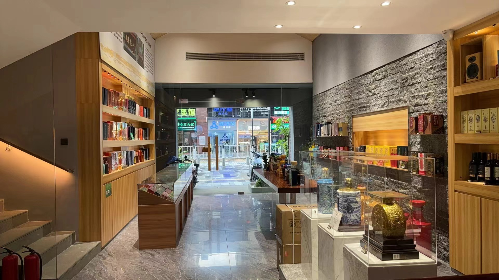
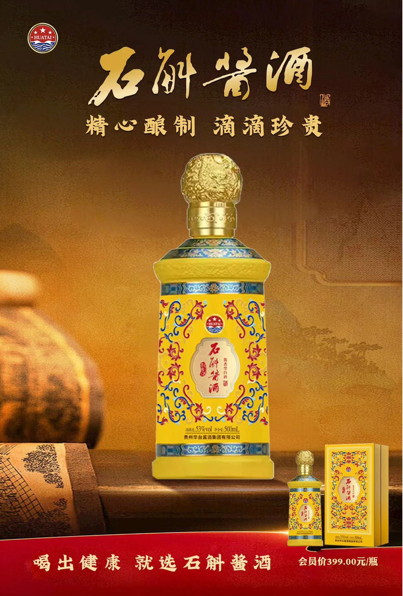

品沁酒业
喝出健康 就选石斛酱酒
店面介绍
贵州华台石斛酱酒～具有补益脾胃，护肝利胆，强筋降脂的功效，为您的健康保驾护航。 端午节为回馈老顾客，特推出以下端午节福利： 1、买一箱送一箱（399*6=2388元，得2箱12瓶），每人限购5箱； 2，再送2支价值1598元贵州20年五星⭐️⭐️⭐️⭐️⭐️收藏酱酒； ～喝石斛酱酒，享健康人生！
产品介绍

产品1名称
华台集团坐落于驰名中外的中国第一酒镇--茅台镇酱香型酒原产地保护区内，享有得天独厚、不可复制的 气候、土壤、水源和微生物群等自然资源条件，是茅台镇历史悠久的酱香型自酒经营企业之一。华台集团的经营线前身是仁怀县茅台酿造三分厂，该始建于上世纪的1984年。建厂初期主要经营酱香型白酒，1987年与中国中医研究院合作研究制经营华台药酒。1989年“华台药酒”更名为“华台酒”，先后得到中国酿酒协会主席、酒界泰斗--秦含章老先生对“华台补酒“的评语、贵州茅台酒厂厂长--季克良对“华台补酒的评语、贵州茅台酒厂高级工程师、中国酱香之父--李兴发对“华台补酒”的评语。从此，华台補酒和酱香型白酒的销量逐年稳步攀升，在国酒之乡均居领先地位。

产品2名称
石斛原料采用仿野生种植，营养价值更高，采用悬崖峭壁上的野生石斛种类，移植到野外种植保留山上种植生长环境，保持野生石斛的重要药用价值和营养价值。并以贵州茅台镇酱酒核心产区纯粮酿造的酱酒基础上增加高端原料仙草--石斛，精心酿造得一款健康养生好酒。